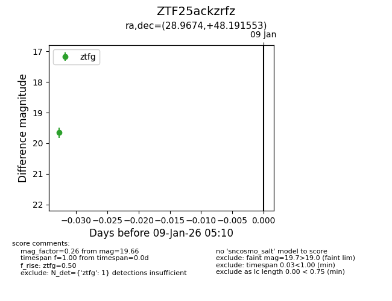
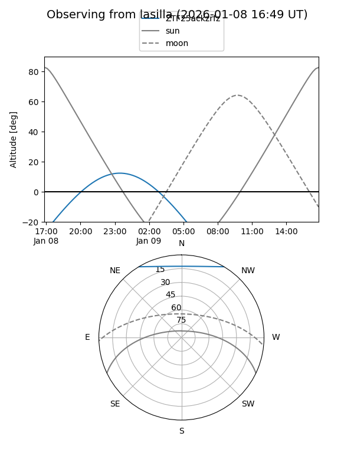
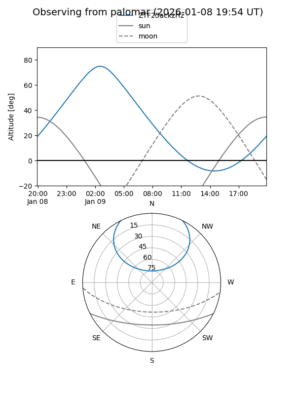

ZTF25ackzrfz
Target ZTF25ackzrfz at 2026-01-09 05:13
Aliases and brokers:
FINK:
Lasair:
ALeRCE:
alt names
ZTF25ackzrfz (ztf,fink_ztf)
Coordinates:
equatorial (ra, dec) = 28.9674,+48.19155
equatorial (HMS+DMS) = 01:55:52.18,+48:11:29.59
galactic (l, b) = (133.8882,-13.30478)
Flags:
Photometry:
last ztfg=19.66
1 ztfg detections
Lightcurve

Visibility


Additional plots